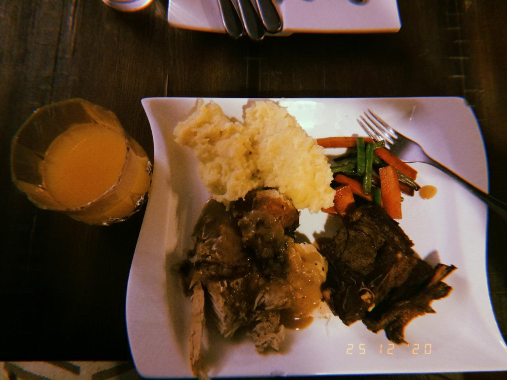

Feel free to look around :)
The first project is about the first website i created on HTML and CSS while the second project is about a cookie recipe that needed indentation and spacing correction on HTML.
Here are some pictures of my first two hobbies.
